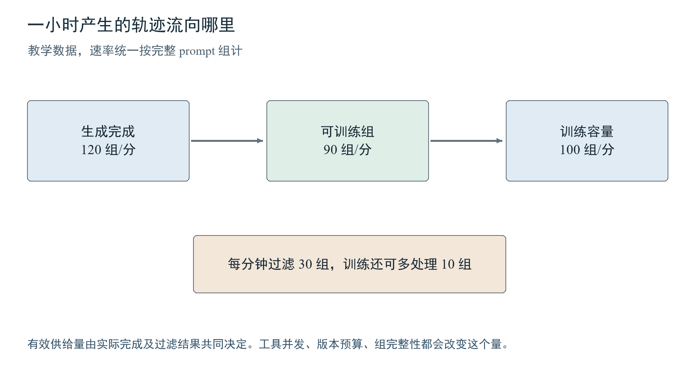

代码块旁的行号链接指向本课采用的提交，仓库及许可见课末。
1 代码修复任务的训练迭代
考虑一个agent接到“修复函数并通过测试”的任务。模型读取问题与代码，生成工具调用；环境运行命令，把测试结果作为新的上下文返回；模型继续修改，最后给出答案或因预算耗尽而结束。rollout指这段策略与环境交互形成的轨迹，可能包含多次生成、多次工具等待和最终奖励。训练端消费的对象需要保留整个交互的身份、动作及条件。
策略π把状态映射到动作分布。在语言模型中，状态包含当前可见token、工具观测和必要的任务信息，动作通常是下一个由模型生成的token。工具返回内容改变后续状态，却不属于策略自己采样的动作。reward可以来自测试通过、规则校验、人工偏好模型或成本项；reward model与生成模型、value model承担不同职责。
一次更新中，各组件生产什么、消耗什么
| 组件 | 输入与输出 | 主要资源 |
|---|---|---|
| Rollout / policy生成 | 任务上下文→动作token、行为logprob、版本 | 生成GPU、KV、调度队列 |
| 环境 / 工具 | 动作→观测、执行结果、终止原因 | CPU、沙箱、存储、外部服务等待 |
| Reward | 轨迹与证据→标量或过程奖励 | 规则CPU或奖励模型GPU |
| Advantage估计 | 奖励、组关系或value→每动作优势 | 归约、分组、可选critic计算 |
| Trainer | token、mask、行为概率、优势→新参数 | 反向、优化器状态、分布式通信 |
| 权重发布与安装 | 训练布局→生成布局及版本切换 | 导出、传输、加载、缓存重建 |
一次同步迭代可以按rollout、reward/advantage、train、weight update串行排列；异步系统允许不同批次处在不同阶段。这样减少等待，却让“生成这条样本时的参数”与“当前正在训练的参数”逐渐分离。第十六课沿同一条轨迹追踪这种分离造成的数据、调度与正确性要求。
代码来自本机实际克隆的veRL、AReaL、OpenRLHF、vLLM和TorchTitan固定提交。文中的时间与容量为教学算例；没有启动训练、推理、沙箱工具或服务器实验。
↑ 返回知识点目录2 轨迹、动作掩码与逐 token 概率
设轨迹按token拼成[P₀,A₀,E₀,A₁]：提示P₀长3，第一段动作A₀长2，环境观测E₀长4，第二段动作A₁长3，总长12。对应loss mask为[0,0,0,1,1,0,0,0,0,1,1,1]，只有5个动作位置贡献策略损失。attention仍须让A₁看到前面的环境观测；loss mask为0不会自动删除观测，也不会把它从后续token的条件里移走。
logprob记录的是每个实际动作在生成时所用分布下的对数概率。为环境位置填0只是占位，必须与mask一起使用；若把这些0当成logprob，等价于宣称观测token被策略以概率1生成。训练输入通常为token[:-1]，labels与mask取token[1:]对应位置，shift后仍要对齐相同动作。
代码 1 每轮追加未训练的prompt增量与参与训练的completion
# Append this turn's chunks: prompt delta (untrained) + completion (trained).
num_delta = len(prompt_delta)
num_completion = len(rollout_turn.completion_token_ids)
sample_in_progress.token_ids += [
prompt_delta,
rollout_turn.completion_token_ids,
]
sample_in_progress.loss_mask += [
np.zeros(num_delta, dtype=bool),
np.ones(num_completion, dtype=bool),
]
sample_in_progress.logprobs += [
np.zeros(num_delta, dtype=np.float32),
rollout_turn.completion_logprobs,
]
sample_in_progress.advantage += [
np.zeros(num_delta, dtype=np.float32),
np.full(num_completion, rollout_advantage, dtype=np.float32),token_ids、loss_mask、logprobs和advantage按相同顺序拼接。prompt_delta包含该轮新上下文；completion使用生成端实际记录的概率。零mask的上下文与零占位概率不能被单独解释。
同一工具结果可能很长，下一轮还可能改变chat template或截断上下文。只用字符串拼接再重新tokenize，容易让原本保存的动作ID与训练label不同；正确样本构造需要验证前缀一致性，必要时拆成多个训练段，并保留每段真正使用的prompt。多模态图像与占位token也需要同一对应关系。
至少保留prompt UID、trajectory/attempt ID、turn ID、token IDs、动作mask、行为logprobs、奖励、终止原因及策略版本信息。组内多个回答共享prompt身份，但拥有不同轨迹身份。工具重试应关联原执行ID，避免同一次成功测试被重复计奖。
代码 2 拼接多轮轨迹时维护最早与最新策略版本
sample_in_progress.min_policy_version = min(
sample_in_progress.min_policy_version, rollout_turn.min_policy_version
)
sample_in_progress.max_policy_version = max(
sample_in_progress.max_policy_version, rollout_turn.max_policy_version
)
prev_len = rollout_turn.num_prompt_tokens + num_completionmin/max能界定一条样本跨了哪些版本，但无法唯一恢复每个token的行为策略；若需要逐段审计，仍应保留turn或token span的版本映射。实际logprob比版本编号更直接参与概率比计算。
情境 一条工具调用轨迹共有 8 个 token，从 0 编号。前两个是 prompt，接着两个由行为策略生成，随后三个来自工具返回，最后一个再由策略生成。策略损失按有效动作 token 数取平均。
问题 在原序列的 8 个位置写出动作掩码，列出贡献损失的标签下标和平均时的分母。最后一个动作由哪一位置的 logits 预测？据此说明工具文本在这次训练中起什么作用。
答案
结论 掩码为 [0,0,1,1,0,0,0,1]，标签位置为 2、3、7，分母为 3。最后一个标签 7 与位置 6 的 logits 对齐。
推导 只有行为策略生成的 token 自带本次采样的动作概率，因此 prompt 和工具返回位置取 0。因果模型用前一位置的输出预测下一个 token，所以动作标签 2、3、7 分别取 logits 1、2、6。工具返回虽然不单独贡献策略损失，其内容仍进入预测最后一个动作时的上下文。
回看题干 ↑3 PPO 与 GRPO 的优势估计
奖励r回答某次动作或结果有多好；优势A回答它相对某个基线有多好。策略梯度通常以A乘动作logprob梯度：正优势鼓励相应动作，负优势降低其相对概率。为了减少方差，PPO常用critic估计状态value，再用时间差分残差构造优势；critic需要额外前向、训练参数、优化器状态和数据同步。
这是GAE的倒序递推表达，γ控制未来奖励折扣，λ控制多步残差累计。终止与时间截断需要不同的bootstrap约定：任务真正结束时通常不再估计后续value；因预算中断的轨迹是否bootstrap取决于所定义的任务。工具观测token不应被机械地当成额外策略动作增加折扣步数。
代码 3 veRL按动作mask跨过观测位置，再形成returns和优势归一化
for t in reversed(range(gen_len)):
delta = token_level_rewards[:, t] + gamma * nextvalues - values[:, t]
lastgaelam_ = delta + gamma * lam * lastgaelam
# skip values and TD-error on observation tokens
nextvalues = values[:, t] * response_mask[:, t] + (1 - response_mask[:, t]) * nextvalues
lastgaelam = lastgaelam_ * response_mask[:, t] + (1 - response_mask[:, t]) * lastgaelam
advantages_reversed.append(lastgaelam)
advantages = torch.stack(advantages_reversed[::-1], dim=1)
returns = advantages + values
advantages = verl_F.masked_whiten(advantages, response_mask)
return advantages, returnsnextvalues与lastgaelam只在response_mask为1的位置更新，mask为0时保持之前递推状态。该实现最后做masked_whiten，因此递推得到的原始优势与最终送入策略损失的归一化优势需要分开记录。
GRPO的outcome版本为同一prompt采样一组回答，用组内reward均值作基线，可选地除以组内标准差。它省去该优势估计所需的独立critic，但增加每prompt多个rollout及组完成约束；reference policy与reward模型是否保留由训练配置决定，不能随critic一起从资源账删除。
代码 4 按prompt index分组，计算均值/标准差，再广播到动作位置
with torch.no_grad():
bsz = scores.shape[0]
for i in range(bsz):
id2score[index[i]].append(scores[i])
for idx in id2score:
if len(id2score[idx]) == 1:
id2mean[idx] = torch.tensor(0.0)
id2std[idx] = torch.tensor(1.0)
elif len(id2score[idx]) > 1:
scores_tensor = torch.stack(id2score[idx])
id2mean[idx] = torch.mean(scores_tensor)
id2std[idx] = torch.std(scores_tensor)
else:
raise ValueError(f"no score in prompt index: {idx}")
for i in range(bsz):
if norm_adv_by_std_in_grpo:
scores[i] = (scores[i] - id2mean[index[i]]) / (id2std[index[i]] + epsilon)
else:
scores[i] = scores[i] - id2mean[index[i]]
scores = scores.unsqueeze(-1) * response_mask这里torch.std默认使用样本标准差；norm_adv_by_std_in_grpo控制是否除std。长度为1的组有特殊回退：均值设0、std设1，行为不同于普通多回答组。
取奖励[0,0,1,1]，均值0.5。总体标准差为0.5，归一化优势约为[−1,−1,1,1]；样本标准差为√(1/3)≈0.57735，优势约为[−0.8660,−0.8660,0.8660,0.8660]。两种实现使用相同“GRPO”名称也可能有不同梯度尺度；检查std定义和epsilon比只看算法标签更有用。
代码 5 TorchTitan可选使用总体标准差，默认配置为仅减均值
def __call__(self, group: RolloutGroup) -> list[float]:
"""Return per-rollout advantages, in group order."""
rewards = [rollout.reward for rollout in group.rollouts]
group_mean = sum(rewards) / len(rewards)
denom = (
(statistics.pstdev(rewards) + 1e-6) if self.should_std_normalize else 1.0
)
return [(reward - group_mean) / denom for reward in rewards]statistics.pstdev与上面的torch.std分母约定不同。should_std_normalize=False时denom=1，此时[0,0,1,1]产生±0.5的优势。
若一组回答的奖励完全相同，按组均值中心化后的优势都为零。这组样本对使用该优势的策略损失项没有梯度贡献；KL 正则或其他损失仍可能更新策略。过滤这样的组会消耗已完成的 rollout，并改变保留下来的任务分布。评估每秒有效训练组数时，应将过滤和失败均计入。
↑ 返回知识点目录4 PPO 概率比的分母
先考虑固定旧策略πold产生样本、当前策略πθ正在更新的基本情况。在同一状态st和动作at上，ρt=πθ(at|st)/π_old(at|st)。这个比率反映新策略相对旧策略给该动作提高或降低了多少概率；它与两个不同token的概率比较无关。log域相减再exp，可以直接使用保存的逐token logprob。
最大化J对应最小化−J。取ε=0.2、A=2、ρ=1.5，两个候选为3和2.4，选2.4，过大的正向提升被截住。取A=−2、ρ=1.5，两个候选为−3和−2.4，选−3，错误动作概率变高仍受惩罚。取A=−2、ρ=0.5，选−1.6，过度降低负优势动作的收益也被限制。不能把PPO描述成简单地把所有梯度所用ratio都clamp到区间内。
代码 6 veRL先构造未截断与截断损失，再逐token取较大负损失
negative_approx_kl = log_prob - old_log_prob
# Clamp negative_approx_kl for stability
negative_approx_kl = torch.clamp(negative_approx_kl, min=-20.0, max=20.0)
ratio = torch.exp(negative_approx_kl)
ppo_kl = verl_F.masked_mean(-negative_approx_kl, response_mask)
pg_losses1 = -advantages * ratio
if cliprange_low is None:
cliprange_low = cliprange
if cliprange_high is None:
cliprange_high = cliprange
pg_losses2 = -advantages * torch.clamp(
ratio, 1 - cliprange_low, 1 + cliprange_high
) # - clip(ratio, 1-cliprange, 1+cliprange) * A
clip_pg_losses1 = torch.maximum(
pg_losses1, pg_losses2
) # max(-ratio * A, -clip(ratio, 1-cliprange, 1+cliprange) * A)
pg_clipfrac = verl_F.masked_mean(torch.gt(pg_losses2, pg_losses1).float(), response_mask)源码中的maximum与公式中的minimum由最小化负目标产生符号转换。数值稳定性另把log ratio夹在±20；这与PPO的1±cliprange是两套不同限制。
这份实现后面1355—1361行还对负优势应用dual-clip，1363—1365行可再乘rollout correction weights。只摘取普通PPO部分用于推导时，应明确剩余分支是否启用。算法正确性不能通过看见“clip”单词来判定。
reference policy πref通常用于限制当前策略偏离某个参考模型的程度，与PPO固定旧策略分母承担不同职责。ref可以长期固定，πold则按训练批次或同步周期更新。KL放在reward还是作为单独loss、采用哪种估计量，会改变数据流与梯度路径，应按配置和实现分别核对。
↑ 返回知识点目录5 异步 veRL 的三个策略版本
异步rollout实际由行为策略μ生成，样本到trainer时参数已经更新。veRL的decoupled模式重新计算固定πold的logprobs，作为随后mini-batch更新的proximal anchor；训练中的πθ继续变化。于是存在两类偏差：πθ相对πold的更新，以及πold相对实际μ的数据分布差异。
代码 7 bypass直接使用rollout logprob，decoupled则建立第三套概率
def _compute_old_log_prob(self, batch: KVBatchMeta, metrics: dict) -> KVBatchMeta:
"""Compute the old log prob of the batch."""
# Operating Mode Selection:
# - Bypass mode: Sets old_log_probs = rollout_log_probs (2 policies: π_rollout, π_θ)
# - Decoupled mode: Recomputes old_log_probs as proximal anchor (3 policies: π_rollout, π_old, π_θ)
# Note: π_old computed once per data batch, serves as stable reference during mini-batch updates
rollout_corr_config = self.config.algorithm.get("rollout_correction", None)
bypass_recomputing_logprobs = rollout_corr_config and rollout_corr_config.get("bypass_mode", False)
if bypass_recomputing_logprobs: # Use `rollout_log_probs`
data = tq.kv_batch_get(
keys=batch.keys, partition_id=batch.partition_id, select_fields=["rollout_log_probs"]
)
data["old_log_probs"] = data.pop("rollout_log_probs")
tq.kv_batch_put(keys=batch.keys, partition_id=batch.partition_id, fields=data)
return batchbypass把old_log_probs设为rollout_log_probs；decoupled继续调用训练worker重算。不能仅根据字段old_log_probs推断它来自实际生成过程。
例子取μ(a|s)=0.2、π_old(a|s)=0.3、πθ(a|s)=0.36，则ρ=1.2，校正权重w=1.5，未截断乘积为1.8，等于πθ/μ。若将old错误理解为μ，就会把ρ当成1.8并触发另一种PPO截断行为。对两个比率分别截断或过滤后，结果通常无法合并成一个比率。
代码 8 token级和sequence级重要性权重使用不同聚合
if rollout_is == "token":
# Per-token IS weight: exp(log(π_train/π_rollout)) with safety clamp
log_ratio_for_metrics: torch.Tensor = log_ratio
log_ratio_safe: torch.Tensor = torch.clamp(log_ratio, min=-SAFETY_BOUND, max=SAFETY_BOUND)
raw_rollout_is_weights: torch.Tensor = torch.exp(log_ratio_safe)
elif rollout_is == "sequence":
# Sequence-level IS weight: product of token ratios (exp(sum(log ratios)))
log_ratio_sum: torch.Tensor = verl_F.masked_sum(log_ratio, response_mask, axis=-1).unsqueeze(
-1
) # Shape: (batch_size, 1)
log_ratio_for_metrics = log_ratio_sum
log_ratio_sum_safe: torch.Tensor = torch.clamp(log_ratio_sum, min=-SAFETY_BOUND, max=SAFETY_BOUND)
raw_rollout_is_weights = torch.exp(log_ratio_sum_safe).expand_as(log_ratio) # Broadcast to sequence lengthtoken模式逐动作exp(log ratio)；sequence模式先按response_mask把log ratio求和，再exp并广播。两个实现都做安全范围夹取，因此不能将数值输出无条件当成未经截断的严格重要性比。
逐token权重只能局部调整给定状态下的动作概率；它没有自动纠正状态访问分布。完整轨迹的重要性比在环境转移机制相同等条件下可写成动作比率的乘积，但长轨迹会放大方差。即使每动作平均偏离很小，几百个乘积也可能集中到少量样本。算法选token、sequence、截断或拒绝策略，是偏差与方差的具体取舍。
四条样本权重[1,1,1,7]，ESS=100/52≈1.923，虽然物理上有四条样本，加权估计的有效信息量可能远低于四条等权样本。ESS是诊断量，不能单凭它推出某次RL更新一定好或坏；还应观察clip比例、拒绝率、奖励分布、KL和最终任务成功率。
概率必须对应真实生成规则，包括temperature、词表约束与可用support。若生成端top-p把部分动作概率截成零，目标策略仍给它们正概率，有限样本重要性加权无法恢复从未被采到的support。重算未经temperature处理的raw logprob，也不能替代实际行为概率。
parameter_sync_step大于1时，πold必须在整个相应周期固定。veRL的separate_async trainer通过保存/恢复模型状态维护这个锚点，再恢复正在更新的πθ。增加同步间隔既影响传输开销，也增加这类状态管理、样本年龄和off-policy程度。
↑ 返回知识点目录6 分布式损失的有效 token 分母
设DP rank0只有一个有效动作，损失4；rank1有三个有效动作，损失都为1。真正的全局token平均是(4+1+1+1)/4=1.75；先算每rank平均再平均得到(4+1)/2=2.5，改变了样本权重。变长轨迹、动态packing和多轮工具观测都容易让每rank有效token数不同。
分母需要跨DP与全部gradient accumulation microbatch统计一致的有效动作数。若梯度collective采用SUM，可让每rank局部损失和除以全局数；若collective最终平均，还要补偿平均因子。具体实现可能在loss、梯度或parallel wrapper中处理该因子，应沿调用链核对，避免两处都补或都漏。
代码 9 无效行为logprob同时从损失与有效分母中排除
log_ratio = torch.clamp(masked_log_ratio, -_MAX_LOG_RATIO, _MAX_LOG_RATIO)
ratio = torch.exp(log_ratio)
clipped_ratio = torch.clamp(
ratio, 1 - self.ratio_clip_low, 1 + self.ratio_clip_high
)
token_loss = -torch.min(ratio * advantages, clipped_ratio * advantages)
masked_loss = token_loss * effective_loss_mask
loss = _normalize(masked_loss.sum(), global_loss_token_counts)
with torch.no_grad():
diff_for_metrics = torch.where(
effective_loss_mask,
raw_log_ratio,
torch.zeros_like(raw_log_ratio),
)
masked_ratio = ratio * effective_loss_mask
metrics = {
"loss/mean": loss.detach(),effective_loss_mask把动作mask与isfinite(generator_logprobs)相交；无效位置的log ratio先置零，避免NaN沿后续表达式传播。_normalize使用global_loss_token_counts；上游统计必须采用相同有效条件。
把NaN logprob直接替换成0会把行为概率变成1；把差值直接替换成0则会让ratio变成1。两种做法都可能制造没有依据的on-policy假象。源码选择丢弃这类token，并需要在计数中同步排除。若无效比例很高，训练吞吐看似正常也可能只剩少量有效监督，应暴露该指标并排查生成端原因。
token平均、每序列平均和每组平均分别对长回答、短回答和prompt group赋予不同权重。不能为了GPU packing方便而无意改变目标。多任务奖励还需要说明是否跨任务归一化，避免把一个容易产长答案的任务在梯度中放大。
↑ 返回知识点目录7 工具调用与组内尾延迟
设同一个 prompt 需要四条轨迹，各自的生成与环境阶段在 8、9、11、70 秒结束。采用完整组的相对奖励时，最后一条决定该组最早可训练时刻。前三条提前离开生成批次，空出的 GPU 槽位可以服务别组。统计时应把单请求等待、工具执行器占用、生成槽位和整组等待分别计时。
代码 10 同一轮工具调用由 gather 汇合
tasks = []
for tool_call in agent_data.tool_calls[: self.max_parallel_calls]:
tasks.append(self._call_tool(tool_call, agent_data.tools_kwargs, agent_data))
with simple_timer("tool_calls", agent_data.metrics):
responses = await asyncio.gather(*tasks)
# Process tool responses and update multi_modal_data
# Removed: agent_data.new_images_this_turn = []
for tool_index, (tool_response, tool_reward, _) in enumerate(responses):
tool_call = agent_data.tool_calls[tool_index]本轮仅调度 max_parallel_calls 范围内的调用。gather 的返回顺序跟随提交顺序，便于把结果匹配回对应 tool_call。这一轮的下一次生成仍须等所依赖的结果到齐。
如果三次独立工具调用分别耗时 50、180、500 毫秒，串行执行约 730 毫秒，同时执行的理想完成时刻为 500 毫秒，加上排队和序列化开销。另一个请求可以在这 500 毫秒内生成。若工具工作线程已满，await 只释放控制协程，外部排队仍会增长。收到工具观测后还要对新增上下文做 prefill。
给工具尝试保存执行 ID、输入、退出状态和回传的观测。一次有副作用的调用超时后，可以查询同一 ID 的完成结果再续写轨迹。把环境超时记为 failed、按任务规则触发的终止记为 terminal、长度用尽记为 truncated，三类记录决定重试、奖励以及 value bootstrap。
↑ 返回知识点目录8 组完成后的训练等待
代码 11 用 UID 注册 prompt，再提交给生成管理器
def _submit_batch_to_rollout(self, batch: TensorDict) -> int:
"""Register prompts in TransferQueue and dispatch them for generation."""
tags = [{"is_prompt": True, "status": "pending", "global_steps": self.global_steps} for _ in range(len(batch))]
if self.trainer_mode != "sync":
tq.kv_batch_put(
keys=list(batch["uid"]),
partition_id="train",
tags=tags,
# Persist prompt data for async checkpoint recovery.
# TODO: maybe let workers do it?
fields=batch.select(*[key for key in batch.keys() if not isinstance(batch.get(key), NonTensorData)]),
)
else:
tq.kv_batch_put(keys=list(batch["uid"]), partition_id="train", tags=tags)
self.agent_loop_manager.generate_sequences(batch)
return len(batch)异步模式把后续恢复需要的 prompt 字段写入 TransferQueue，pending 标签记录提交步数。函数返回的是提交数量。训练端仍要等待生成、打分和组过滤。
代码 12 等待策略检查在途请求的步龄
# Dropless off-policy control: block sampling while any in-flight prompt has reached the staleness
# threshold, so it can finish and be trained on instead of dropped.
if self.max_off_policy_threshold is not None and self.max_off_policy_strategy == "wait":
for key in self.pending_keys[partition_id] | self.running_keys[partition_id]:
prompt_global_steps = self.prompt_global_steps[partition_id][key]
if (global_steps - prompt_global_steps + 1) >= self.max_off_policy_threshold:
return False
return len(sampleable_keys) >= batch_size即使已经凑够 batch，只要某个在途组的年龄达到阈值，wait 策略也会暂缓消费，让它有机会完成。相邻 drop 分支对 finished 组使用自己的比较规则，二者的阈值等号边界也有差别。
设生成每分钟完成 120 组，质量与完整性过滤留下 75%，则进入训练的是 90 组/分。训练端能处理 100 组/分时，稳态平均还差 10 组/分。若日志只记完成组数，很容易把缺样本误诊为训练慢。反过来，有效供给 120、消费 100，十分钟将积压 200 组，增加缓存和版本差。
代码 13 只在以队首为起点的窗口中选已完成组
if self._work_by_group_id:
head_group_id = next(iter(self._work_by_group_id))
for group_id, work in self._work_by_group_id.items():
if (
self._window_size is not None
and group_id >= head_group_id + self._window_size
):
break
if work.state is not _RolloutGroupWorkState.FINALIZED:
continue
del self._work_by_group_id[group_id]
self._condition.notify_all()
return work.rollout_group
await self._condition.wait() # nothing finalized inside the window -> stall假设 g0 执行中，g1 等待，g2、g3 已完成。窗口为 3 时 g2 可以被取走，g3 仍在窗口外。g0 继续停留在队首，所以取走 g2 也不会自动放行 g3。窗口为 1 对应严格的队首顺序。
组内完整性解决优势如何计算，组间选择决定谁先被训练。提高窗口宽度可隐藏长尾，也可能优先选中较短、较易或少用工具的任务。比较不同窗口时应同时按任务类别看消费比例与成功率。

图 16-1 读取队列时同时核对计数单位和过滤位置。
↑ 返回知识点目录9 AReaL 的在途样本限制
代码 14 并发余量与策略版本余量共同限制新任务
with self.lock:
current_version = self.version_provider.get_version()
# Calculate concurrency-based capacity
max_concurrent_rollouts = max(1, self.max_concurrent_rollouts)
concurrency_capacity = max_concurrent_rollouts - self.rollout_stat.running
# Calculate staleness-based capacity
ofp = self.max_staleness
sample_cnt = self.rollout_stat.accepted + self.rollout_stat.running
consumer_bs = max(1, self.consumer_batch_size)
staleness_capacity = (ofp + current_version + 1) * consumer_bs - sample_cnt
# Return the minimum of both constraints
capacity = min(concurrency_capacity, staleness_capacity)
return capacityaccepted 是累计成功计数，running 是当前在途数。任务完成时 running 减一、accepted 加一，两个量的和保持不变。版本推进才打开新一批额度。
取当前版本 v=5，最大陈旧度 s=1，消费批量 B=8，已接受 A=42，在途 R=10，并发上限 30。并发余量 20，版本余量 56−52=4，最多再提交 4 个。若还有一个失败尝试退出，running 减少且 accepted 不增加，额度重新释放。实现允许容量返回负数，准入方需要在正额度时才启动新任务。
代码 15 恢复时把累计接受计数移到恢复版本对应的起点
Expected to be called during trainer init, before any rollouts are
submitted, so running == 0. If running > 0 (unlikely in practice),
accepted is still set correctly and the capacity formula remains
bounded — (max_staleness + 1) * consumer_bs - running.
"""
with self.lock:
consumer_bs = max(1, self.consumer_batch_size)
self.rollout_stat.accepted = version * consumer_bs从版本 50 恢复，B=8，s=1。初始化 accepted=400 且 running=0，版本余量为 16。漏掉这一步会算出 416，短时间内生成出多批旧样本。
这个公式约束总供应量。某条轨迹的实际年龄还由生成跨度和消费顺序决定。记录行为版本区间 [46,48]、消费版本 50，可以报告最旧动作差 4 版，最新动作差 2 版。还应记录墙钟年龄用于区分训练暂停、环境长尾与真正的参数漂移。
情境 训练器当前使用策略版本 53，只接收滞后不超过 2 个版本的样本组，恰好滞后 2 也允许。队列中出现版本 50、51、53。另有一份两分钟汇总：生成 60 组，12 组过龄，另有 8 组的组内奖励完全相同，按本题规则也要丢弃，两批互不重叠。
问题 逐个判断三个版本能否通过版本检查。接着用两分钟汇总计算生成速率和通过全部过滤的有效组速率，两个答案都用组/分钟。为什么单看生成速率会高估交给训练器的供给？
答案
结论 版本 50 超龄，51、53 可进入后续检查。两分钟生成 60 组、最终可用 40 组，速率分别为 30 和 20 组/分钟。
推导 当前版本减去样本版本分别得到 3、2、0，只有 3 超过上限。汇总中已知两类剔除互不重叠，所以可直接算 60−12−8=40。再分别除以同一观察时长 2 分钟。通过版本门槛只表明样本足够新，仍可能因组内缺少奖励差异而被过滤。
回看题干 ↑10 权重切换与轨迹有效性
代码 16 OpenRLHF 的刷新、暂停和恢复接口
return await self.llm.collective_rpc(
"update_weight_cuda_ipc",
args=(name, dtype, shape, ipc_handles, empty_cache),
)
async def reset_prefix_cache(self):
await self.llm.reset_prefix_cache()
async def pause_generation(self):
await self.llm.pause_generation(mode="keep")
async def resume_generation(self):
await self.llm.resume_generation()暂停明确传入 keep，保留在途请求。reset_prefix_cache 是另一项操作。缓存参数的含义应查询实际部署的 vLLM 版本。
代码 17 vLLM 固定提交中的缓存清理默认值
async def pause_generation(
self,
*,
mode: PauseMode = "abort",
clear_cache: bool = True,
) -> None:
"""Pause generation to allow model weight updates.
All mode handling (abort / wait / keep) and cache clearing is done这里的 clear_cache 默认 True。keep 保存请求队列，clear_cache 决定已有 KV 与前缀缓存怎样处理。这两个参数作用在不同对象上。
一次回答已经生成 6 个 token，版本从 17 切换到 18，又产生 4 个。轨迹保留 [0,6)→17、[6,10)→18 以及每个动作的行为 logprob。清除旧 KV 后，保留的 token IDs 要在新权重下重建相应状态。使用旧 KV 接续则叠加了缓存与新模型的不一致，仅把最后一次输出标签记作 18 无法复原这段历史。
vLLM 的版本标签由调用方设置。生成暂停、所有副本安装结束、写入版本标签、恢复准入需要按顺序建立完成条件。connector 跨实例缓存若继续按旧 hash 找页，需按权重版本隔离缓存命名空间或清理。对频繁变化的 RL 权重，前缀命中率还应乘上该版本的可用寿命。

图 16-2 暂停横跨两个行为版本。区间边界决定哪一段动作由哪个版本生成。
↑ 返回知识点目录11 权重分桶传输与缓冲复用
一个 1T 参数 BF16 模型的单份权重为 2 TB，按十进制计。在有效聚合带宽 200 GB/s 的单一传输瓶颈上，搬完一份的下界是 10 秒。若生成复制组各要一份，汇总入流量随副本数增长。树形广播可以让中间节点转发，源端直连带宽与全网累计字节需要分开计量。
训练侧 FSDP 分片可能要求先重组参数，生成侧再按 TP、EP 或量化布局切片。例如逻辑矩阵有 8 行，原布局两 rank 各持 4 行，目标按列二分。目标的每个 rank 都需要来自两个源 rank 的相应列。导出时应携带参数名、全局形状、切片范围、dtype 与 scale，才能区分正确布局与字节数恰好相同的错误布局。
代码 18 新权重写不进当前桶时先发送已有内容并等待确认
alignment = weight.element_size()
offset = (offset + alignment - 1) // alignment * alignment
# fill the tensor bucket
if offset + weight.nbytes > self.bucket_size and len(bucket_meta) > 0:
get_torch_device().synchronize()
self.socket.send_pyobj({"bucket_meta": bucket_meta, "is_last": False})
self.socket.recv()
bucket_meta = {}
offset = 0
if offset + weight.nbytes > self.bucket_size:
assert not self.use_shm, (
f"Weight {name}({weight.shape}, {weight.dtype}) is too large to fit in the bucket."
f"Please increase rollout.update_weights_bucket_megabytes({self.bucket_size_mb} MB)."
)
self._direct_send_large_weight(name, weight)offset 按元素宽度对齐。超过整桶的单个 tensor 有专门的传递路径，shared memory 分支还会检查容量。这里展示的是本机 IPC 实现，跨节点后端另有注册、传输和完成协议。
代码 19 接收方消费 tensor view 后再确认桶可重用
size = dtype.itemsize * shape.numel()
tensor = self.buffer[offset : offset + size].view(dtype=dtype).view(shape)
if self.use_shm:
tensor = tensor.to(self.device)
weights.append((name, tensor))
is_last = metadata["is_last"]
on_bucket_received(weights, is_last)
get_torch_device().synchronize()
del weights, tensor
if not is_last:
self.socket.send(b"")
else:
self._ack_pending = True同一缓冲通过 offset、dtype、shape 还原各权重。回调完成并同步设备后才发 ACK，阻止尚在读数据的加载操作与下一桶的覆写相撞。
代码 20 安装成功、释放传输资源、恢复缓存和继续生成的次序
if self.backend_cls.support_publish_weights:
await self.abort_replicas()
await self.release_kv_cache_replicas()
rollout_committed = rollout.update_weights(global_steps=global_steps)
results = await asyncio.gather(*trainer_published, *rollout_committed)
await asyncio.gather(
*self.actor_wg.execute_checkpoint_engine(["finalize"] * self.actor_wg.world_size),
*rollout.execute_checkpoint_engine(["finalize"] * rollout.world_size),
)
await self.resume_kv_cache_replicas()
await self.resume_generation_replicas()
return self._merge_sync_metrics(results[: self.actor_wg.world_size])trainer_published 与 rollout_committed 都参与等待。源码还区分支持先发布的后端和需要提前 quiesce 的耦合传输，暂停窗口可以随之改变。
若第 2 个副本在第 9 桶失败，已更新的副本可以有完整新版本，失败者则可能混有两代参数。在协调切换方案中将未完成者保持在准入之外，并按固定版本重装或重建副本。把一次 send 返回当成所有副本可用的信号会向采样器暴露混合的模型。
↑ 返回知识点目录12 训练与生成共享 GPU 的切换成本
共置能让训练与生成分阶段使用同一设备，需要为权重驻留、KV、激活及 offload 保留空间。分池可以把训练反向与其他样本的生成重叠，却增加权重同步流量。若环境延迟主导，给生成端多 GPU 可能几乎无效。先从每阶段持续时间和有效组数算出瓶颈。
代码 21 separate_async 把同步周期和 mini-batch 大小联系起来
f"training, but got train_batch_size={train_batch_size}, "
f"parameter_sync_step={parameter_sync_step}, ppo_mini_batch_size={ppo_mini_batch_size}"
)
assert config.actor_rollout_ref.rollout.nnodes > 0, "nnodes must be > 0 in separate async training"
assert config.actor_rollout_ref.rollout.n_gpus_per_node > 0, (
"n_gpus_per_node must be > 0 in separate async training"
)
assert config.actor_rollout_ref.rollout.checkpoint_engine.backend != "naive", (
"please use nccl/nixl/mooncake, etc. backend for separate async training"
)
if need_reward_model(config):
assert config.reward.reward_model.enable_resource_pool, (
"Colocate reward model (reward.reward_model.enable_resource_pool=False) is not supported "
"in separate async mode, because the standalone rollout never pauses to free GPU memory. "
"Use standalone mode (reward.reward_model.enable_resource_pool=True) instead."
)代码要求 train_batch_size 等于 parameter_sync_step × ppo_mini_batch_size，并对独立生成资源与权重传输后端做配置检查。改变同步频率会同时影响训练样本和固定旧策略的管理。
假设独立生成池每秒完成 2 个有效组，还差 40 组。训练设备闲置并能将供给提到 4 组/秒，理论节约 10 秒。借出和归还合计 6 秒则仍有 4 秒余量。若只差 8 组，节省 2 秒，切换会拖长训练等待。生产中用最近一段的实测切换开销和有效组供给估算这个临界点。
八卡课堂推演可以先把 4 卡划给生成、4 卡划给训练。固定模型、任务和优化器，给工具注入 50 至 500 毫秒的已知长尾；同步与异步各跟踪一组完成时刻、trainer 等样本时间、生成池空闲原因及权重安装停顿。训练质量按相同有效动作数和相同 GPU 小时各比较一次，二者分别反映样本效率和系统效率。
↑ 返回知识点目录13 同一权重下的 logprob 偏差
先固定 token IDs、上下文、温度、模型版本和词表约束，再在训练和生成两条路径比较选中动作的 logprob。此时差值反映数值实现和输入布局。另取不同版本重算得到的差值则还包含策略本身的变化。把两次对照放在同一批轨迹上，才有办法解释 PPO 里 ratio 的来源。
代码 22 生成端调用与训练侧对应的 logprob 计算
# purely because torchtitan's compute_logprobs takes one token id per
# position; it is not a cross-column/cross-position dependency.
token_ids = token_ids.to(torch.int64)
per_column = [
compute_logprobs(
logits,
token_ids[:, k],
vocab_parallel_group=None,
)
for k in range(token_ids.shape[1])
]
return torch.stack(per_column, dim=-1) # [N, K]
同一个 token 的打分还依赖上游 logits。两端 reduction 顺序、attention 分块和 MoE top-k 选择发生变化时，统一最后的 logprob 函数只能消除其中一部分差异。
该提交的 TitanRL parity 说明要求两端匹配 TP 度数，并限制 sequence parallel。固定计算次序、禁用部分低精度归约、固定 attention 的 split 数都会改变性能。共享定义或复用编译产物可以减少重复编译；可复用范围取决于 shape、dtype、设备和编译配置，逐 bit 一致还要在所用路径核对。
↑ 返回知识点目录14 待训练样本组的故障恢复
代码 23 把 TransferQueue 状态与训练步保存在同一检查点目录
# save TransferQueue state for async modes so in-flight prompts (already fetched from the
# dataloader but not yet trained into this checkpoint's weights) survive a restart:
# finished trajectories are restored as-is, pending/running prompts are re-issued on resume.
if self.trainer_mode != "sync":
tq.save_checkpoint(
os.path.join(local_global_step_folder, "transfer_queue"),
metadata={"global_steps": self.global_steps},
)dataloader 已取出的 prompt 可能处于 finished、pending 或 running。保存队列后，完成轨迹可以恢复，未完成任务可重发。仅回放 dataloader 游标会漏掉这批工作。
代码 24 TorchTitan 等待训练端发布，再让生成路由器加载版本
async def _pull_model_state_dict_and_release_groups(
self, version: int, *, after: asyncio.Task[float]
) -> float:
"""Once the push ``after`` lands, load policy ``version`` into every generator, then admit
the next rollout groups; returns the pull's wall time in seconds."""
await after
with sl.log_trace_span("generator_pull_model_state_dict"):
start = time.perf_counter()
await self.generator_router.pull_model_state_dict.call_one(version)
pull_s = time.perf_counter() - start调用结束后，后续代码才释放相应组槽位。生成版本已经就绪，是开下一批新组的依赖条件。
设训练步 40 已提交，组 g7 在这一步被消费，g8 已完成尚未消费，g9 的工具仍在途。恢复点应让 g7 归属步 40，g8 留在待消费集合，g9 按原尝试 ID 查询工具结果或重发。若恢复只保留权重与 prompt 列表，会同时面临 g7 重复训练与 g8 丢失。
复核一次异步提速，先问每小时完成多少有学习信号的组，再问这些组的版本、任务难度和长度是否变化。若有效组从每小时 1000 增至 1200，但同一训练预算下任务成功率下降，按工具失败、样本年龄、组过滤和 logprob 漂移逐项对照。最终成本按所有生成、训练、环境与失败尝试成本除以成功任务数计算。
情境 训练步 40 的检查点已经提交。消费清单写明轨迹组 g7 已纳入这一步；g8 的结果已持久化，但尚未被训练器消费；g9 的一次外部工具调用已发出，回执还没写进本地队列。此时整个作业重启，外部工具支持按尝试 ID 查询和幂等重试。
问题 对 g7、g8、g9 各给出恢复后的第一项操作。分别解释盲目重放可能造成怎样的重复或遗漏，并指出训练步的消费记录要与哪些状态对齐。
答案
结论 跳过已提交的 g7，将 g8 恢复为待消费，先按原尝试 ID 查询 g9。训练步、策略版本、消费清单、队列游标和工具回执应能对应到同一批记录。
推导 重放 g7 会让同一组梯度被计算两次。把 g8 当成已消费则会漏训，应在它实际进入并提交后续训练步时确认消费。g9 可能已在外部执行成功；查到结果就接回原轨迹，需要重试时沿用原幂等键，这样既能补回结果，也能避免重复副作用。
回看题干 ↑